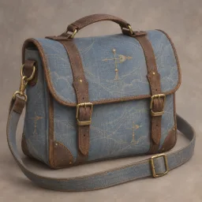
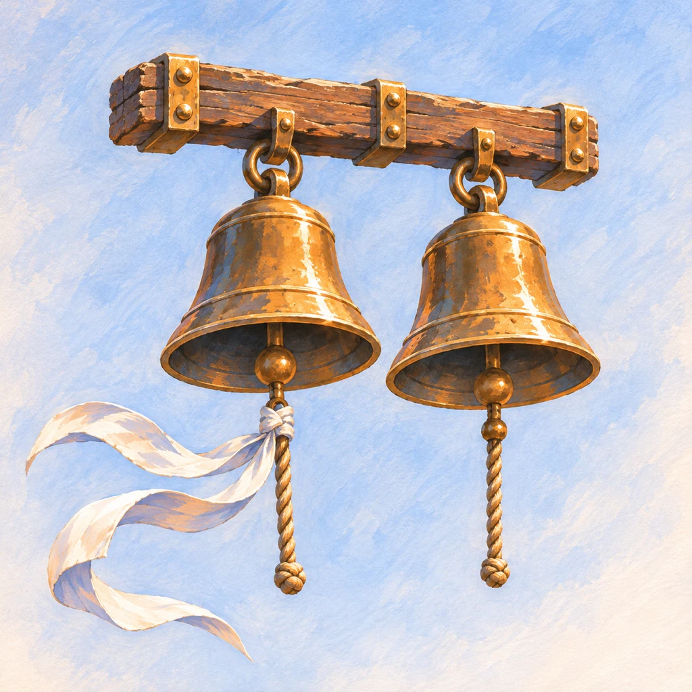
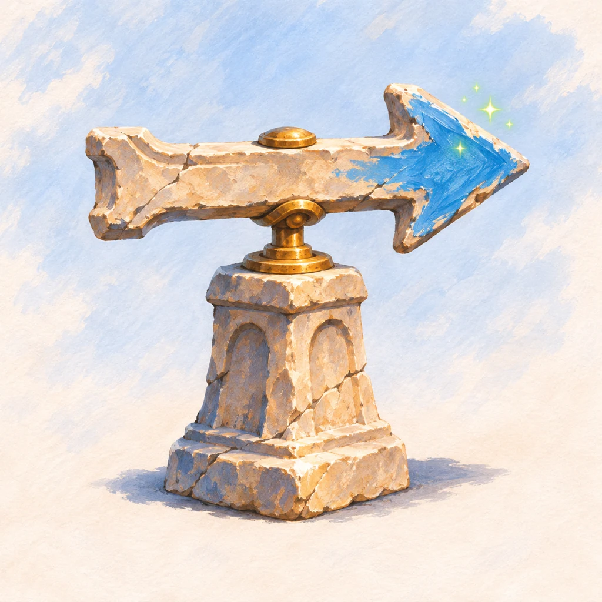
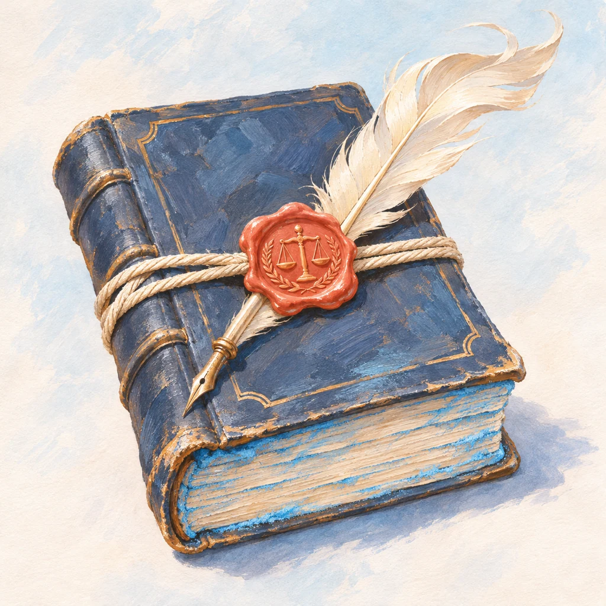
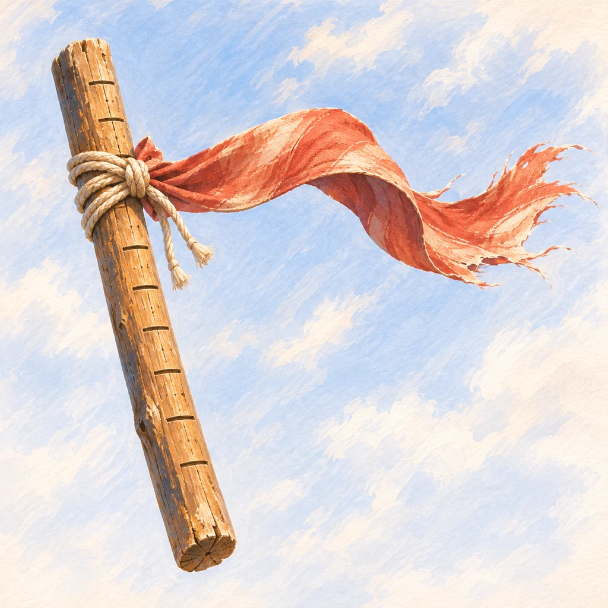
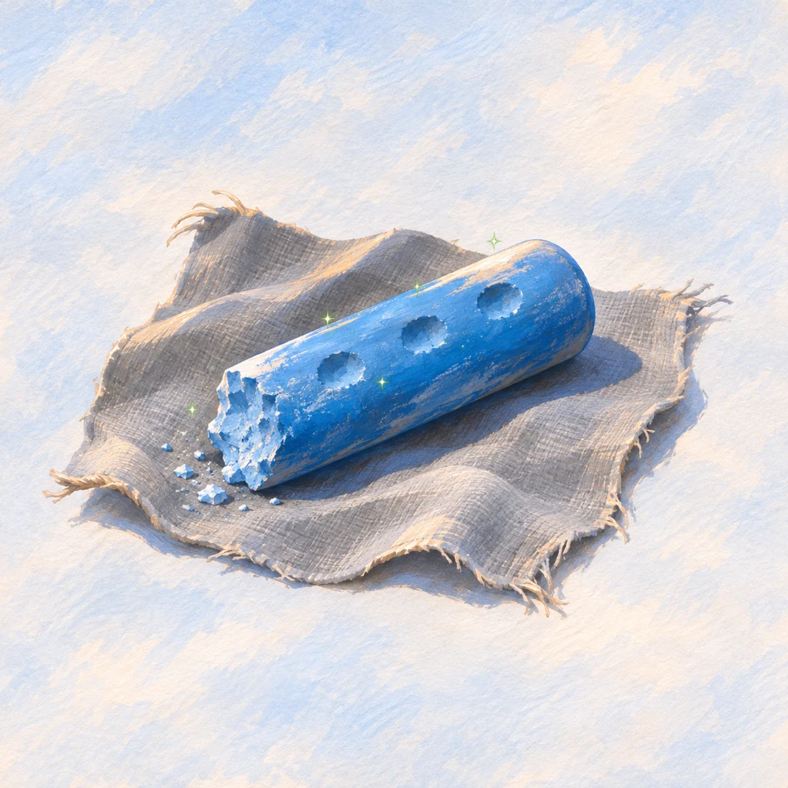

Дорожный набор: Альта Ренн
Личные немагические дорожные принадлежности; эффекты определяет ведущий.
Владелец по комплекту: Альта Ренн
Дорожный набор: Лис Тарен
Личные немагические дорожные принадлежности; эффекты определяет ведущий.
Владелец по комплекту: Лис Тарен
Дорожный набор: Яра Вей
Личные немагические дорожные принадлежности; эффекты определяет ведущий.
Владелец по комплекту: Яра Вей
Дорожный набор: Брин Орт
Личные немагические дорожные принадлежности; эффекты определяет ведущий.
Владелец по комплекту: Брин Орт
Дорожный набор: Рута Кель
Личные немагические дорожные принадлежности; эффекты определяет ведущий.
Владелец по комплекту: Рута Кель
Дорожный набор: Искра Ним
Личные немагические дорожные принадлежности; эффекты определяет ведущий.
Владелец по комплекту: Искра Ним

Доска этапов
Большая грифельная доска в дубовой раме. Восемь строк с полосками цветов экипажей, столбцы участков, внизу лоток с белым мелом и мокрая тряпка. Мел въелся в рамку и в рукава того, кто пишет.
Вся таблица этапов: восемь экипажей, время каждого участка, сумма и отставание от лидера. После первого вечера доска стоит на корме судейской баржи «Ровный счёт». Ведущий читает её вслух после каждого участка, игроки сверяют копию. Под доской пишется спорная строка. Порядок старта финала берётся отсюда.

Два стартовых колокола
Два бронзовых колокола на одной балке над причалом. У одного свисает верёвка с белой лентой, у другого простая пеньковая. Тон у них чуть разный.
Задают старт: первый удар рвёт тросы шквалом, второй звучит через минуту, третий выпускает остальных. В первый вечер это спор о минуте, а не улика против кого-либо. Игроки могут спросить Весту, почему удара два. Предмет связан с уликой two-start-orders.

Белые ленты отвода
Длинные белые шёлковые ленты, у каждой вышит номер экипажа. Свёрнуты в плетёную корзину у стола регистрации и пахнут лавандой и пылью.
Веста раздаёт ленты капитанам на регистрации. Правило 9 памятки: Отвод судьи — у колокола финала: каждый капитан вправе поднять белую ленту. Четыре ленты и больше — спорная строка исполняется до старта, минуты возвращаются. Меньше четырёх — строка остаётся записанной, но не исполняется. Капитан, которого герои подвели — заблокировали, оставили в беде, обманули молчанием на развилке, — ленту за них не поднимет ни по просьбе, ни за вещь. Дария поднимает ленту только если читала расчёт. Кто поднимет ленту, ведущий ведёт заранее по поступкам, видным на доске.

Запасная страховка Руты
Плетёный трос в красной оплётке с двумя латунными карабинами. Отшлифован руками, на концах аккуратные обмотки.
На шквале первого вечера ею можно без броска поймать трос «Киновари»: +3 минуты, но страховка остаётся на кнехте Порта Гелий. Если её сберегли, на вечере 7 её можно отдать Нери — если экипаж её не подводил: вторая страховка на «Киновари», цена поворота в финале −2. Отданная или оставленная страховка героям уже не принадлежит.
Владелец по комплекту: Рута Кель

Медный мелодержатель
Тонкий медный футляр с пружинным зажимом. На зажиме три аккуратные насечки. Лежит на судейском столе рядом с линейкой и перчатками.
Лежит у судьи на столе при регистрации. Если игроки приглядятся, ведущий описывает три насечки без выводов. Позже форму зажима можно сравнить с вмятинами на найденном обломке мела. Предмет входит в путь А к знаковому мелу.

Указатель Атласа
Каменный столб в полоску с поворотной стрелкой. Наконечник стрелки нарисован лазурным мелом, на солнце в нём мелькают зелёные искры. Такие же столбы стоят у каждой развилки маршрута.
Читать путь: куда смотрит стрелка, туда и идёт линия. На Перевёрнутом причале наконечник свежий и блестит. Его можно потереть пальцем и осмотреть, спросить маршала Орина. Тот же знак на семи столбах Развилки Семи Знаков можно развернуть обратно. Предмет входит в путь А к знаковому мелу.

Журнал выдачи мела
Толстая книга в белой меловой пыли на столе диспетчера баржи. Переплёт перетянут шнуром с печатью коллегии, поля исписаны мелким почерком.
Любой капитан по правилу памятки вправе попросить Весту показать его. В журнале записаны выдачи и вскрытия ящиков знакового мела. Показать его Веста может открыто или тихо. Вторая запись есть с вечера 5. Если книгу потеряют на барже, Веста по памяти продиктует записи.

Белый капитанский пакет
Плотный белый конверт с красной судейской печатью, всегда на поясе капитана «Белого Кречета». Кромки слегка потёрты, печать цела.
Дария носит его запечатанным. Герои могут вернуть его ей в бою на четвёртом участке или попросить вскрыть его на вечерах 5–7. Содержимое она читает при героях и выдаёт раздатку daria-calculation. Если пакет унесли налётчики, запасной путь — слова Горрана на палубе баржи.

Полоса красного вымпела
Выцветшая красная полоса ткани с обтрёпанным краем. Привязана выцветшим шнуром к мерному шесту Наима и треплется на ветру отмели.
Повод заговорить с Наимом о старом финале: он рассказывает сразу, если спросить. Показывает, чей вымпел когда-то был разрезан. Помогает героям понять, что запись «отказ от продолжения» не вся правда. К обману регаты не относится.

Обломок знакового мела
Короткий лазурный обломок с зелёной искрой. На боках три вмятины от зажима. Лежит у подножия пятого столба.
Находится сам, когда герои правят знаки или садятся у столбов. Крошку можно отнести Фее Ланн в Школу ветров, а вмятины сравнить с мелодержателем. Предмет сводит вместе пути А и В.

Призовой сундук
Окованный медью сундук с судейской печатью на замке. Стоит на палубе баржи у мачты, ручки обёрнуты кожей.
Цель абордажа на шестом участке. Горран срывает крышку в конце первого раунда — или сразу, как кто-то крикнет, что сундук пуст. Печать с датой можно рассмотреть после боя; Веста подтверждает дату. Предмет — вещественная улика растраты.

Белая перчатка судьи
Повседневные белые перчатки судья меняет каждый вечер — они безупречно белые. Парадная пара с медной пуговицей лежит в лаковом футляре на его столе.
До финала на вопрос о перчатках: «Перчатки безупречно белые. Он меняет их каждый вечер.» Если просят открыть лаковый футляр: «Футляр заперт, ключ у судьи на цепочке: „Парадные — для колокола финала“.» У колокола финала на правой парадной перчатке видны лазурные полосы, без броска; Веста сразу берёт верёвку.
Дорожный набор: Сев Аран
Личные немагические дорожные принадлежности; эффекты определяет ведущий.
Владелец по комплекту: Сев Аран
Дорожный набор: Мея Сол
Личные немагические дорожные принадлежности; эффекты определяет ведущий.
Владелец по комплекту: Мея Сол